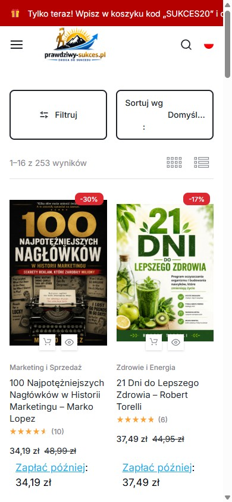
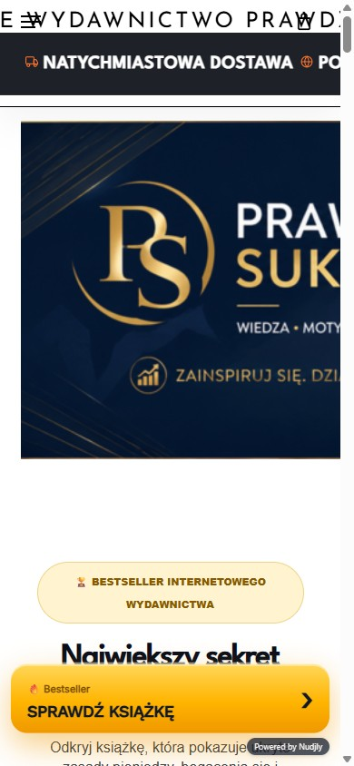

prawdziwy-sukces.pl i prawdziwysukces.pl — pomiar wersji mobilnej
Zrobiony po Pana wiadomości, na obu stronach, przy szerokości ekranu 390 px
Najdroższy błąd: pasek z kodem rabatowym jest ucięty
Na prawdziwy-sukces.pl na górze jest czerwony pasek z treścią:
„Tylko teraz! Wpisz w koszyku kod SUKCES20 i otrzymaj 20% rabatu na całe zamówienie. Promocja obejmuje wszystkie książki, e-booki i audiobooki."
Ten tekst ma 998 px szerokości w kontenerze o szerokości 1028 px, a ekran telefonu ma 390 px. Klient na telefonie widzi tylko początek: „Tylko teraz! Wpisz w koszyku kod „SUKCES20" i o…" — i nic więcej. Pasek się nie przewija i nie zawija.
Skutek: akurat ten kod widać jeszcze w całości, ale warunki promocji już nie. Gdyby kod był choć o kilka znaków dłuższy albo stał dalej w zdaniu, nie byłby widoczny wcale — a to jest pasek, który ma bezpośrednio zwiększać sprzedaż. To poprawka na kilkanaście minut.
Jak obie strony wyglądają na telefonie — zrzuty z pomiaru


Liczby
| Co mierzone (przy 390 px) | prawdziwy-sukces.pl | prawdziwysukces.pl |
|---|---|---|
| Czas pełnego załadowania | 1,09 s | 2,80 s |
| Waga strony | 1,84 MB / 72 zasoby | 3,54 MB / 127 zasobów |
| Elementy wychodzące poza ekran | tak — pasek promocyjny (1028 px) | tak — m.in. baner i nagłówek (767 px) |
| Elementy dotykowe mniejsze niż 44 px | 98 ze 140 | 16 ze 100 |
| Bloki tekstu poniżej 14 px | 87 | 13 |
| Zdjęcia bez opisu alternatywnego | 17 z 41 | 2 z 41 |
| Zdjęcia bez leniwego ładowania | 11 z 41 | — |
| Opis meta strony głównej | jest | brak |
| Wersja WordPressa | 7.1 | 7.0.4 (starsza) |
Co znaczy „98 elementów dotykowych poniżej 44 px"
44 × 44 px to rozmiar, przy którym palec trafia pewnie. Na stronie sklepowej dotyczy to przycisków „do koszyka", ikon podglądu produktu, filtrów i paginacji. Przy 98 elementach poniżej tego progu część klientów trafia obok i klika drugi raz — a część rezygnuje. To nie jest kwestia estetyki, tylko liczby osób, które dochodzą do koszyka.
Co znaczy „87 bloków tekstu poniżej 14 px"
To dokładnie ta „czytelność", o której Pan pisze w swoim ogłoszeniu usługi. Ceny, nazwy kategorii i opisy przy produktach są na telefonie mniejsze niż wygodny próg czytania. Zmiana rozmiaru w kilku miejscach arkusza stylów, bez ruszania układu, załatwia większość.
Jedno pytanie, na które nie znam odpowiedzi
Obie domeny prowadzą do dwóch różnych stron, a nie do jednej z przekierowaniem: inne tytuły, inne wersje WordPressa, inna zawartość. To może być w pełni zamierzone (sklep osobno, wydawnictwo osobno), ale jeśli nie jest, to dwie podobne domeny z podobną treścią konkurują ze sobą w wyszukiwarce. Zapytam o to, zanim cokolwiek doradzę — nie zgaduję.
Czego nie sprawdzałem
- Panelu WordPressa od środka — widzę tylko to, co widzi klient.
- Innych podstron niż strona główna każdej z domen.
- Wyglądu na konkretnym modelu telefonu — mierzyłem przy 390 px, czyli typowej szerokości iPhone'a. Na węższych ekranach (360 px) część problemów będzie większa, nie mniejsza.
- Danych sprzedażowych — bez nich nie powiem, ile złotówek kosztuje ucięty pasek. Powiem tylko, że kosztuje.